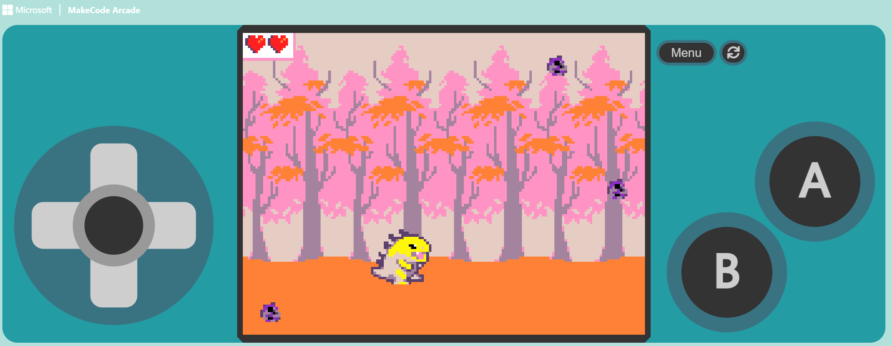
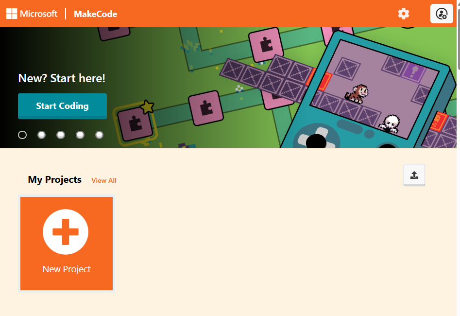
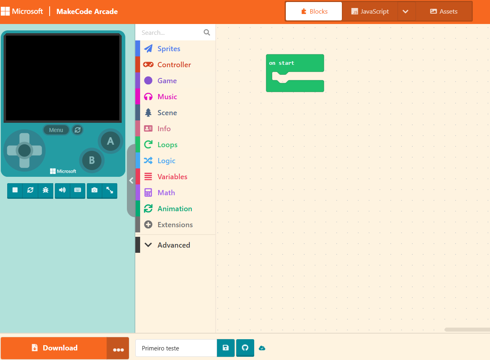
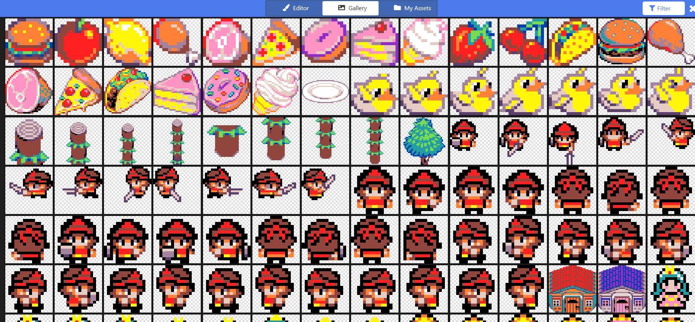
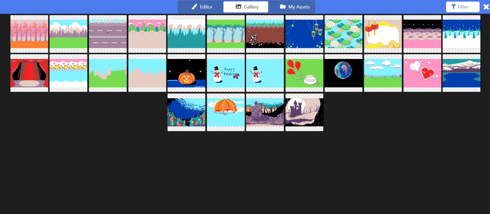
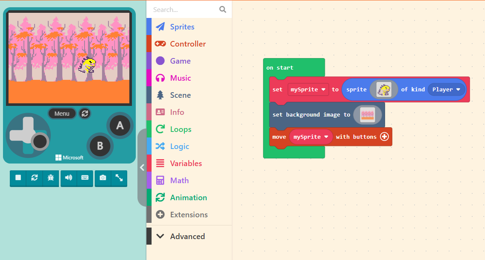
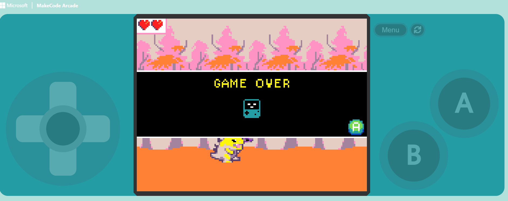

Missão Programador e Game Designer - Jogo de Esquiva no MakeCode Arcade
Nesta oficina, os estudantes serão desafiados a assumir o papel de game designers e programadores, desenvolvendo um jogo de esquiva funcional no MakeCode Arcade. O projeto consiste em, utilizando algoritmos de colisão, sistemas de pontuação e controle de vidas, programar um personagem controlado pelo jogador para desviar de obstáculos que caem continuamente. Ao longo do desenvolvimento, os estudantes poderão personalizar o tema do jogo (sustentabilidade, cibersegurança, saúde digital etc.), integrar conhecimentos de outras áreas à criação digital e ampliar o significado pedagógico da experiência. Toda a construção pode ser realizada integralmente no ambiente virtual do MakeCode Arcade, com a possibilidade de compartilhamento dos jogos finalizados por meio de link ou QR Code gerado pela própria plataforma.
Estrutura da Oficina
Materiais
Lista de materiais/softwares/componentes necessários
Preparar
20 minApresentação
Nesta oficina, os estudantes são convidados a compreender como se constrói um jogo digital com base em decisões de design e programação. A proposta consiste no desenvolvimento de um jogo de esquiva no MakeCode Arcade em que um personagem deve desviar de obstáculos que caem continuamente na tela.
A construção do jogo exigirá a decomposição do problema em partes menores (movimento, geração de obstáculos, colisão e contagem de pontos) e a organização dessas etapas em algoritmos funcionais. O foco está no processo de testar, ajustar e aprimorar o código até que o jogo se torne jogável, equilibrado e capaz de proporcionar uma experiência desafiadora ao jogador. Ao final, mais do que um jogo pronto, os estudantes terão desenvolvido raciocínio lógico, capacidade de análise e autonomia para transformar ideias em sistemas funcionais.

helpPerguntas reflexivas
- O que torna um jogo divertido? Como as decisões de programação influenciam essa experiência?
- Como o computador identifica que o personagem encostou em um obstáculo?
- O que aconteceria se os obstáculos caíssem muito rápido ou muito devagar?
- Qual tema poderia tornar o jogo mais significativo (ex.: desviar de poluição, fugir de vírus)?
O grande destaque da nossa oficina é o MakeCode Arcade, uma plataforma gratuita e visual que permite criar jogos por meio de blocos de programação organizados como peças de encaixar. Embora a interface seja intuitiva, a lógica envolvida é a mesma utilizada em linguagens de programação tradicionais.
A ferramenta possibilita explorar conceitos fundamentais da computação, como eventos, que ocorrem quando uma ação do jogador ou uma condição do sistema dispara uma resposta do programa; laços de repetição, que permitem gerar obstáculos continuamente; e estruturas condicionais, que são responsáveis por definir comportamentos como perder uma vida ao detectar colisão.
Além disso, o uso de listas ajuda a armazenar e gerenciar múltiplos objetos simultaneamente na tela, o que facilita a organização de elementos como obstáculos, inimigos ou itens colecionáveis. Mesmo em linguagem por blocos, os estudantes trabalham com estruturas algorítmicas robustas e, com isso, desenvolvem raciocínio lógico e compreensão do funcionamento interno dos jogos digitais. Tudo isso sem precisar escrever códigos complexos, mas mobilizando os princípios da lógica de programação!
tips_and_updatesDicas de condução
Embarque
Inicie a aula propondo um primeiro contato rápido com o MakeCode Arcade, com o objetivo de familiarizar os estudantes com a interface e os principais recursos da plataforma.
Oriente os estudantes a acessar o site arcade.makecode.com e, depois, a clicar em “Novo Projeto”. Solicite-lhes que atribuam um nome ao projeto, reforçando a importância de nomear corretamente os arquivos desde o início.

Apresente a organização da tela inicial. Para isso, destaque as três áreas principais:
- à esquerda, o simulador, que representa o “dispositivo” no qual o jogo será executado;
- ao centro, a área de blocos, em que se encontram os comandos disponíveis;
- à direita, a área de programação, na qual os blocos serão organizados para estruturar o funcionamento do jogo.

Oriente os estudantes a adicionar um personagem (sprite) utilizando o bloco “set mySprite” no menu “Sprites”. Eles podem optar por desenhar um personagem próprio ou selecionar uma imagem da “Gallery” da ferramenta.

Em seguida, solicite que escolham um cenário no conjunto “Scene”. Há também a opção de desenhar ou selecionar uma arte disponível da “Gallery”, por meio do bloco “set background image to ()”.

Após a escolha do personagem e do cenário, proponha o primeiro desafio exploratório: fazer com que o personagem se movimente pelo cenário utilizando os blocos do grupo “Controller”. Incentive a experimentação e a observação do comportamento do personagem no simulador.

Durante essa etapa, oriente os estudantes a registrar ideias iniciais para o jogo: qual personagem escolheram, que tipo de obstáculo poderia ser inserido, de onde esses obstáculos surgiriam, qual temática poderia dar sentido à narrativa do jogo etc. Esse planejamento inicial auxiliará nas próximas etapas de desenvolvimento.
Passo a passo para o estudante
- Acesso: peça aos estudantes que acessem o site arcade.makecode.com e preferencialmente façam login para que possam salvar suas produções.
- Exploração: após a exploração guiada, proponha o seguinte desafio: Vocês têm 2 minutos para fazer o personagem andar pelo cenário por meio das setas do teclado ou pelo joystick do dispositivo simulado.
- Exploração livre: incentive a turma a explorar os diferentes blocos e a errar sem medo, pois isso pode conduzi-los a descobertas importantes para esta primeira etapa.
- Socialização: quem descobrir um novo comando aplicável para a construção do jogo poderá compartilhar com a turma.
Criar
60 minProtótipo
Criando um Jogo de Esquiva

A construção do jogo no MakeCode Arcade pode representar uma novidade significativa para muitos estudantes. Para garantir que todos se mantenham engajados e consigam acompanhar o processo, organize a atividade em etapas claras e progressivas, promovendo a sensação de conquista a cada avanço.
Reforce que programar envolve testar, identificar erros e realizar ajustes constantes. O objetivo não é acertar de primeira, mas compreender o funcionamento do sistema e aprimorar o projeto ao longo do percurso. Ao final da sequência principal, cada estudante deverá ter um jogo jogável e funcional, pronto para ser compartilhado com os colegas.
Apresente previamente os marcos da atividade e destaque que o foco principal é garantir que todos avancem até a etapa 5, momento em que o jogo já contará com movimentação, geração de obstáculos, sistema de colisão e controle básico de vidas. As etapas seguintes podem ser apresentadas como desafios opcionais para aprofundamento ou ampliação criativa.
Refletir
10 minAprendizados
Dinâmica de compartilhamento: "Feira de games"
Organize um momento breve para socialização dos jogos desenvolvidos. Como o tempo pode ser limitado, priorize dinâmicas ágeis e coletivas que valorizem o protagonismo dos estudantes e a troca de experiências.
- Opção 1 – Roda de testes: divida a turma em duplas. Cada um dos estudantes testa o jogo do colega por aproximadamente 2 minutos e, em seguida, realiza a troca. Ao final, cada participante comenta um aspecto positivo do jogo testado e apresenta uma sugestão de melhoria, estimulando o feedback construtivo.
- Opção 2 – Galeria interativa: caso haja projetor disponível, convide alguns voluntários a apresentar seus jogos para a turma. Durante as demonstrações, incentive os colegas a observar elementos como movimentação, temática escolhida, equilíbrio da dificuldade e comportamento dos obstáculos.
- Opção 3 – Compartilhamento digital: oriente os estudantes a utilizar a opção “Compartilhar” no MakeCode Arcade para gerar o link ou QR Code do jogo. Os links podem ser publicados em um mural virtual (como o Padlet), permitindo à turma explorar os jogos posteriormente.
Finalize reforçando que, mesmo partindo de um mesmo desafio, diferentes decisões de programação resultam em experiências únicas de jogo.
helpPerguntas reflexivas
- Qual foi a parte mais fácil de programar? E a mais desafiadora? Por quê?
- Se fosse necessário tornar o jogo progressivamente mais difícil, quais elementos do código poderiam ser modificados?
- Como o computador identifica que o personagem encostou no obstáculo? O que acontece no programa quando isso ocorre?
- O que aconteceria se não fosse usada uma lista para gerenciar os obstáculos? O que mudaria na organização do código?
- Que tema você escolheu para o seu jogo? Como a programação ajudou você a contar essa história?